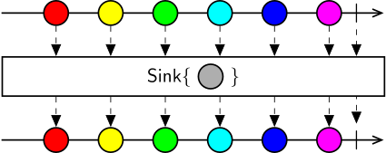

Class Sink
Represents an expression builder that adds the side effects specified by the encapsulated workflow to an observable sequence without modifying its elements.

The Sink operator uses the nested workflow to specify a reactive operation over the elements of the source sequence. Sink emits all values from the source sequence directly without modification, and the nested sequence is subscribed to purely for its side-effects. All notifications emitted by the inner WorkflowOutput node are ignored.
Tip
Sink operators are very useful to prevent side-effects from affecting the source sequence. Even if the inner sequence terminates early, or changes the timing of emitted values, these effects will not propagate to the outer sequence.
Warning
If the source sequence terminates, the subscription to the nested sequence will be cancelled. If the reactive operation needs to be fully asynchronous and decoupled from the main sequence, consider using Subjects to process items in a separate branch of the workflow.
[WorkflowElementCategory(ElementCategory.Sink)]
public class Sink : SingleArgumentWorkflowExpressionBuilder, IWorkflowExpressionBuilder, INamedElement, IPropertyMappingBuilder, IExpressionBuilder- Inheritance
-
Sink
- Implements
- Derived
- Inherited Members
- Extension Methods
Constructors
Sink()
Initializes a new instance of the Sink class.
public Sink()Sink(ExpressionBuilderGraph)
Initializes a new instance of the Sink class with the specified expression builder workflow.
public Sink(ExpressionBuilderGraph workflow)Parameters
workflowExpressionBuilderGraphThe expression builder workflow instance that will be used by this builder to generate the output expression tree.
Methods
Build(IEnumerable<Expression>)
Generates an Expression node from a collection of input arguments. The result can be chained with other builders in a workflow.
public override Expression Build(IEnumerable<Expression> arguments)Parameters
argumentsIEnumerable<Expression>A collection of Expression nodes that represents the input arguments.
Returns
- Expression
An Expression tree node.